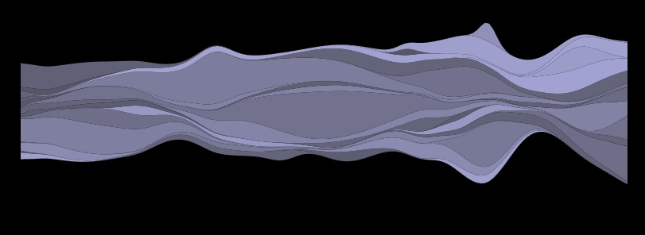

<!DOCTYPE html>
<meta charset='utf-8'>
<title>Terms CSV Streamgraph</title>
<head>
<style>

	body {
	  font: 10px sans-serif;
	  position: relative;
	  width: 700px;
	  background: black;
	}
    .axis path{
        fill:none;
        stroke: white;
    }
    .axis {
        font-size:8pt;
        font-family:sans-serif;
        stroke: white;
    }
    .tick {
        fill:none;
        stroke: white;
    }

</style>
<script src='../d3.js'></script>
<script src='../mytooltip.js'></script>
<script>
	//sg is the data required for the streamgraph, it contains the x,y and y0
	//  values for each layer - it needs to be accessible to mouseover if we
	//  want to show the y values in the tooltip. 
	var sgData = null,   
		tooltip = null,
		streamgraph = null,
	//terms is an array of all the unique layer labels in the dataset
		terms = [];
	
	function draw(data) {
		"use strict";
		var width = 700,
			height = 200,
	    	margin = 20,
	    	layers = null,
			dates = [];

		//parseDate defines how the dataset has it's dates stored
		// in this case it's 11\20\2012 for different date formats, change this
		var parseDate = d3.time.format("%m\\%d\\%Y").parse;
		
		//populate arrays - unique layer labels and unique x values
		var getLayerAndAxisValues = function(row) {
			var axisValue = row.x;
			var i = dates.indexOf(axisValue);
			if (i == -1)
				dates.push(axisValue);
			var layerValue = row.layer;
			i = terms.indexOf(layerValue);
			if ( i == -1)
				terms.push(layerValue);
		}
		
		//get unique terms and date strings
		//  in this visualization, a term is a layer
		//  and a date is an x tick
		data.forEach(getLayerAndAxisValues);
		var countOfLayers = terms.length;
		var countOfXTicks = dates.length;
		
		//convert the data from values to xy values
		var getLayerXYs = function(layerLabel) {
			var layerRows = data.filter(function(row){return row.layer == layerLabel;});
			//initialize the layer data - for stack it needs to be fully populated
			var layerXYs = dates.map(function(dateString, iDate) {
				return {"x":iDate, "y":0}
			})
			layerRows.forEach(function(row){
				var iDate = dates.indexOf(row.x);
				var layerXY = layerXYs[iDate];
				layerXY.y = Number(row.y);
				//return {"x":iDate, "y":Number(row.y)};
			})
			return layerXYs;
		}
		sgData = terms.map(getLayerXYs);

		//add the x axis - the dates
		var x_extent = d3.extent(dates, parseDate);
		var x_scale = d3.time.scale()
			.range([margin, width - margin])
			.domain(x_extent);
		var x_axis = 
			d3.svg.axis()
				.scale(x_scale)
				.orient("bottom");
		var xScale = d3.scale.linear()
		    .domain([0, countOfXTicks - 1])
		    .range([0, width]);
		
		//send sgData into the stack/wiggle calculation - it creates 
		//  the additional data needed for the layout of the graph
		layers = d3.layout.stack().offset('wiggle')(sgData);
		
		//create the yScale
		var fn1 = function(d) {	return d.y0 + d.y;}
		var fn2 = function(layer) {	return d3.max(layer, fn1);	}
		var max_y_value = d3.max(sgData, fn2);
		var yScale = d3.scale.linear()
		    .domain([0, max_y_value])
		    .range([height - margin, 0]);
		
		//Define what color range we'll use
		//  #aad to #556 are rgb values that are a range
		//  of blues
		var color = d3.scale.linear()
		    .range(["#aad", "#556"]);
		
		//draw the streamgraph visualization
		var area = d3.svg.area()
		    .x(function(d) { 
		    	var date = parseDate(dates[d.x]);
		    	var onscale = x_scale(date);
		    	return onscale; 
		    	})
		    .y0(function(d, i) { 
		    	return yScale(d.y0); 
		    	})
		    .y1(function(d) { 
		    	return yScale(d.y0 + d.y); 
		    	});
		
		var svg = d3.select("body").append("svg")
		    .attr("width", width)
		    .attr("height", height);
		
		streamgraph = svg.selectAll("path")
		    .data(layers)
		    .enter().append("path") 
		    .attr("d", area)
		    .style("fill", function() { return color(Math.random()); })
		    .on("mouseover", mouseover())
		    .on("mouseout", mouseout())
		   
		d3.select('svg')
			.append('g')
				.attr('class', 'x axis')
				.attr('transform', 'translate(0,' + (height - margin) + ')')
			.call(x_axis);

	    	
	}//end draw
	
	function mouseover() {
        return function(g, i) {
        	var name = terms[i]; //sgData[i].label;
        	//add the lines below to see the first values 
        	//   in the tooltip
        	var valuesToShow = sgData[i].filter(function(d,i){return i < 6;})
        	var yvalues = valuesToShow.map(function(d) { return '<br>' + d.y;})
        	name += " " + yvalues;
        	if (tooltip) 
        		tooltip.Show(d3.event, 'label: ' + name);
        	streamgraph
        		.filter(function(h,j){return j != i;})
        		.style("opacity", .6);
        }
	}
	
    function mouseout() {
        return function(g, i) {
        	//hide tooltip
        	if (tooltip) 
        		tooltip.Hide(d3.event);
        	//reset the opacity of all the layers
        	streamgraph
        		.filter(function(h,j){return j != i;})
        		.style("opacity", 1);
        }
    }

	//the div for the tooltip
  	function tooltipDiv() {
		var ttd = 
		'<div id="tooltip"' +
		'	style = "' +
		'	background-color: lightgray;' + 
		'	width: 100px;' +
		'	height: 10em;' +
		'	text-align: left;' +
		'	opacity: 0.7;' +
		'	border-radius: 5px;' +
		'	display: none;' + 
		'	padding-left: 1em;">' + 
		'	</div>';
		return ttd;
	}
	
	//a test to see if the browser supports this functionality
	//  if it's unsupported, an error will be thrown here
	function maptest() {
		var arrayIn = [ 2, 4, 6];
		var arrayOut = arrayIn.map(function(d) { return d + 2; });
	}
	
	//add 
	function addToolTipDiv() {
		if (! tooltip) {
			var ttdString = tooltipDiv();
			document.write(ttdString);
			tooltip = new MyToolTip("tooltip", false);
		}
	}
	

</script>
</head>
<body>
	<script>
		try {
			//ensure that the browser supports functionality needed for the visualization
			maptest();
			//add a div for the tooltip
			addToolTipDiv();
			//draw the visualization
			d3.csv('../data/termfreqmed.csv', draw);
		}
		catch (err) {
			//put up a static image
			document.write('<p align=left></p>');
			console.log("error: " + err);
		}
	</script>
</body>
